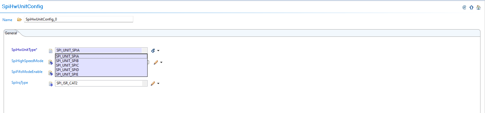
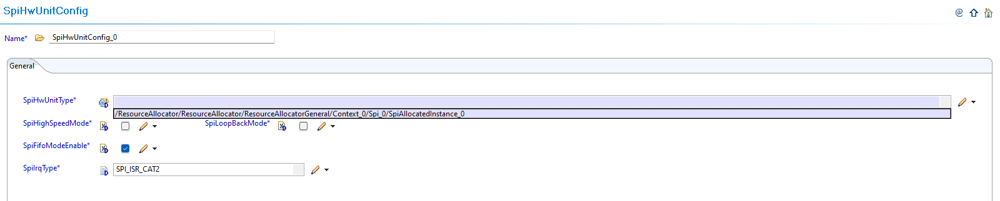
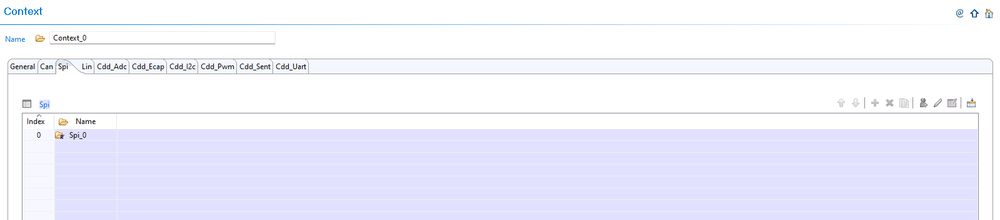
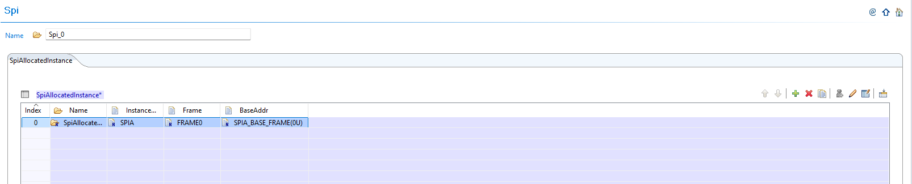
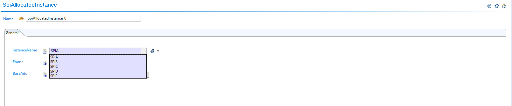
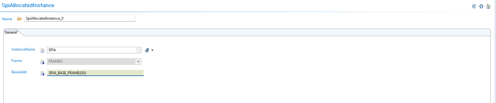
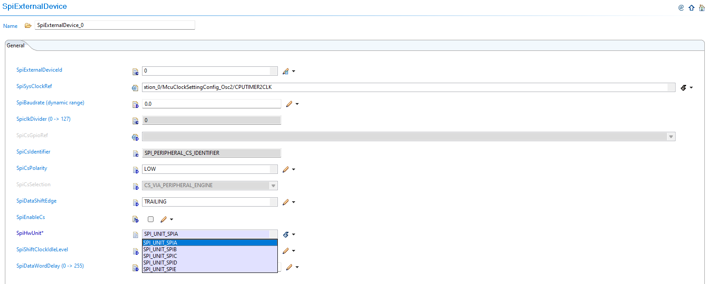
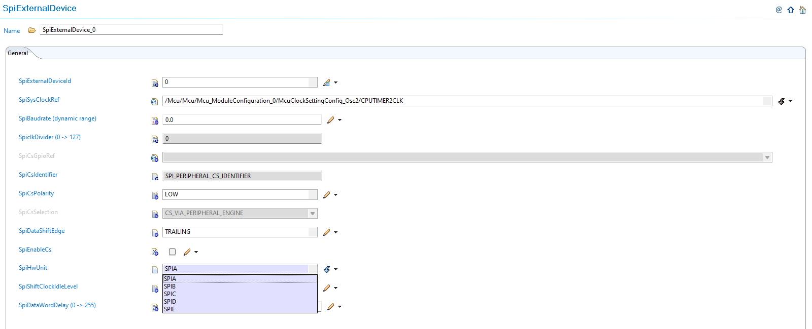

6.8. SPI Module Migration
Migration Approach: Follow sequential migration for clear understanding of changes at each version. Each migration is organized by individual changes with description, old vs new comparison, and migration actions.
6.8.1. v03.00.00 (i.e release v01.04.00) from v02.00.00 (i.e release v01.03.00) Migration
6.8.1.1. Summary
Version v03.00.00 introduces Resource Allocator as a mandatory architectural foundation. This represents a fundamental shift from direct parameter configuration to centralized resource management:
Resource Allocator Introduction: Resource Allocator becomes mandatory for all SPI module configuration
Instance Name Updates: SPI instance naming convention changes from descriptive names to simplified identifiers
Hardware Unit Configuration Updates: SpiHwUnit references updated to use Resource Allocator instances
External Device Configuration Updates: SpiExternalDevice configurations updated to reference allocated instances
PREREQUISITE: Complete Resource Allocator Setup before proceeding.
6.8.1.2. Change 1: Resource Allocator Introduction
6.8.1.2.1. Description
Resource Allocator becomes a mandatory architectural foundation, replacing direct parameter configuration with centralized resource management. This represents a fundamental shift in how SPI controllers are configured and referenced, with available SPI instances now determined by Resource Allocator configuration.
6.8.1.2.2. Old vs New Configuration
Previous Configuration (v02.00.00): Direct parameter selection was used without Resource Allocator dependency.
{kind=link}

Fig. 6.28 v02.00.00: Direct SPI unit parameter selection with SPI_UNIT_SPIA format
New Configuration (v03.00.00): SPI hardware unit configurations now reference the SPI instances allocated through Resource Allocator.
{kind=link}

Fig. 6.29 v03.00.00: Select SPI instance from ResourceAllocator reference
6.8.1.2.3. Migration Actions
Setup Resource Allocator: Follow Resource Allocator Setup
Navigate to Context: Navigate to ResourceAllocatorGeneral → Context → Spi and add SPI allocator:
{kind=link}

Fig. 6.30 Navigate to Context and add SPI allocator
Add SPI Instance: Add SpiAllocatedInstance with new naming convention:
{kind=link}

Fig. 6.31 Add SpiAllocatedInstance with new naming (SPIA, SPIB, etc.)
Configure SPI Instance: Configure SPI instances with new controller names:
{kind=link}

Fig. 6.32 Configure SPI instances with new controller names
Complete Configuration: Finalize SPI instance allocation:
{kind=link}

Fig. 6.33 Complete SPI instance allocation (SPIA, SPIB, SPIC, SPID)
Navigate to SpiHwUnit: Navigate to Spi → SpiHwUnit and update configurations to reference the SPI instances allocated in Resource Allocator
Open Hardware Unit Configuration: Access the SpiHwUnit configuration that needs to be updated
Set Instance Reference: Set SpiHwUnitType to point to the corresponding SpiAllocatedInstance in Resource Allocator (SPIA, SPIB, SPIC, SPID)
Verify Automatic Derivation: Confirm that the SPI hardware unit parameters are now automatically derived from the Resource Allocator reference
6.8.1.3. Change 2: Instance Name Updates
6.8.1.3.1. Description
SPI instance naming convention changes from descriptive names to simplified identifiers. The new naming pattern removes the “SPI_UNIT_” prefix for consistency across modules and improved Resource Allocator integration.
6.8.1.3.2. Old vs New Instance Names
Instance Name Mapping:
v02.00.00 |
v03.00.00 |
Hardware |
|---|---|---|
SPI_UNIT_SPIA |
SPIA |
SPI_A |
SPI_UNIT_SPIB |
SPIB |
SPI_B |
SPI_UNIT_SPIC |
SPIC |
SPI_C |
SPI_UNIT_SPID |
SPID |
SPI_D |
Naming Pattern: SPI_UNIT_{NAME} → {NAME}
Note
ISR names are unaffected by this change.
6.8.1.3.3. Migration Actions
No additional action required. Controller name updates are automatically handled when following the Resource Allocator setup steps in Change 1. The controller naming convention changes from old identifiers (MCASPI_UNIT_SPIAN1, SPI_UNIT_SPIB) to updated identifiers (SPIA, SPIB) are applied automatically through the Resource Allocator configuration.
If you have used the old controller names in the application code, please change them to match the new naming convention.
6.8.1.4. Change 3: Hardware Unit Configuration Updates
6.8.1.4.1. Description
SpiHwUnit configurations are updated to reference SPI instances allocated through Resource Allocator instead of using direct instance names. The SpiHwUnitType parameter now references the Resource Allocator’s SpiAllocatedInstance.
6.8.1.4.2. Old vs New Hardware Unit Configuration
Previous Configuration (v02.00.00): Direct SPI unit parameter selection with SPI_UNIT_SPIA format.
Fig. 6.34 v02.00.00: Direct SPI unit parameter selection with SPI_UNIT_SPIA format
New Configuration (v03.00.00): SpiHwUnitType parameter now references Resource Allocator’s SpiAllocatedInstance.
Fig. 6.35 v03.00.00: Select SPI instance from ResourceAllocator reference
6.8.1.4.3. Migration Actions
Navigate to SpiHwUnit: Navigate to Spi → SpiHwUnit and update configurations to use the SPI instances allocated in Resource Allocator
Open Hardware Unit Configuration: Access the SpiHwUnit configuration that needs to be updated
Set Instance Reference: Set SpiHwUnitType parameter to reference the Resource Allocator’s SpiAllocatedInstance instead of using direct instance names
Verify Automatic Derivation: Ensure all hardware unit configurations properly reference the allocated SPI instances and parameters are automatically derived from the Resource Allocator reference
6.8.1.5. Change 4: External Device Configuration Updates
6.8.1.5.1. Description
SpiExternalDevice configurations are updated to reference SPI instances allocated through Resource Allocator and ensure compatibility with the new instance allocation system. External devices must now reference valid allocated instances from Resource Allocator.
6.8.1.5.2. Old vs New External Device Configuration
Previous Configuration (v02.00.00): SpiExternalDevice used direct SPI unit parameter selection.
{kind=link}

Fig. 6.36 v02.00.00: SpiExternalDevice with direct SPI unit parameter selection with SPI_UNIT_SPIA format
New Configuration (v03.00.00): SpiExternalDevice configurations reference allocated instances from Resource Allocator.
{kind=link}

Fig. 6.37 Configure external device with the SPI instance configured in Resource Allocator
6.8.1.5.3. Migration Actions
Navigate to SpiExternalDevice: Navigate to Spi → SpiExternalDevice and verify configurations reference valid allocated instances
Add External Device: Add SpiExternalDevice configuration as needed for your application
Configure Device Instance: Configure external device with the SPI instance configured in Resource Allocator
Verify Compatibility: Ensure all external device configurations properly reference allocated SPI instances from Resource Allocator
Note
The Resource Allocator module must be configured before the SPI module to ensure correct instance availability. Available SPI instances are determined by the Resource Allocator’s SpiAllocatedInstance configuration for the current context.
6.8.2. v02.00.00 (i.e release v01.03.00) from v01.01.00 (i.e release v01.02.00) Migration
6.8.2.1. Summary
Version v02.00.00 introduces configuration structure name changes to comply with AUTOSAR requirement TPS_ECUC_08011:
Configuration Structure Name Change: SPI configuration structure name updated for AUTOSAR TPS_ECUC_08011 compliance
6.8.2.2. Change 1: Configuration Structure Name Change
6.8.2.2.1. Description
Version v02.00.00 changes the configuration structure name for AUTOSAR TPS_ECUC_08011 compliance. This change ensures compliance with AUTOSAR naming conventions and requires updates to application code that references the SPI configuration structure.
6.8.2.2.2. Old vs New Configuration Structure
Configuration Structure Name Mapping:
v01.01.00 and older |
v02.00.00 |
|---|---|
|
|
Code Examples:
// v01.01.00 and older
Spi_Init(&Spi_ConfigObj);
// v02.00.00
Spi_Init(&Spi_Config);
6.8.2.2.3. Migration Actions
Search Application Code: Find all references to
Spi_ConfigObjin your application codeReplace Structure Name: Update all references from
Spi_ConfigObjtoSpi_ConfigUpdate Function Calls: Ensure all SPI initialization calls use the new structure name
Update Upper Modules: Update any upper modules that reference the configuration structures to use the new structure name
Verify Compilation: Clean build and verify no compilation errors related to SPI configuration structure